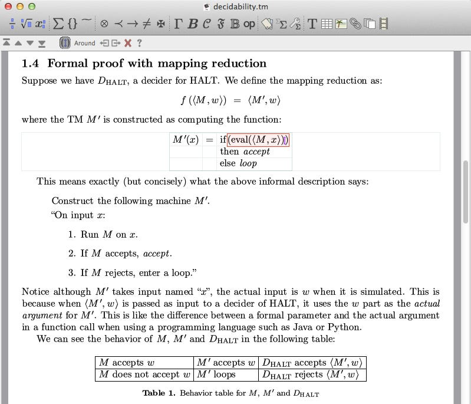
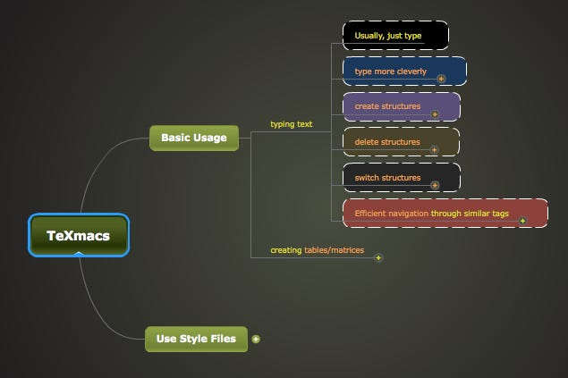

TeXmacs was my best kept secret for writing math homework and papers. It is a state-of-the-art typesetting system. Many people think that it is a "front end" of TeX/LaTeX (similar to LyX), but actually TeXmacs is independent of TeX and fundamentally better than TeX. TeXmacs inherited some good designs of TeX, but then went far beyond.
TeXmacs has the same or even better typographical quality than TeX but with much more intuitive and beautifully designed interface. The editor environment is 100% WYSIWYG. That means, the screen shows exactly what you would print out on paper. As of today, I don't know of any other typesetting system or word processor (including MS Word) that can achieve this. It is also WYTIWYG (What You Think Is What You Get). With all the beauty, you still have detailed control of document structure. The UI and controls are also intuitive and well-designed. You may sense the notion of "human centered design" in it.
Over the years, I have accumulated lots of useful knowledge regarding its use and have collected them into a mind map. Click on the following image and you can see my best tricks with this software.
Have fun!
